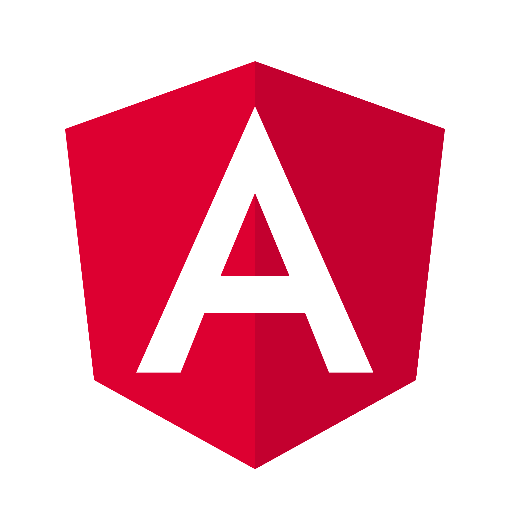
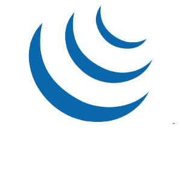
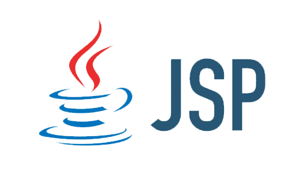
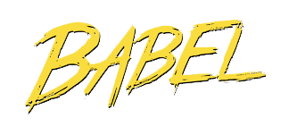
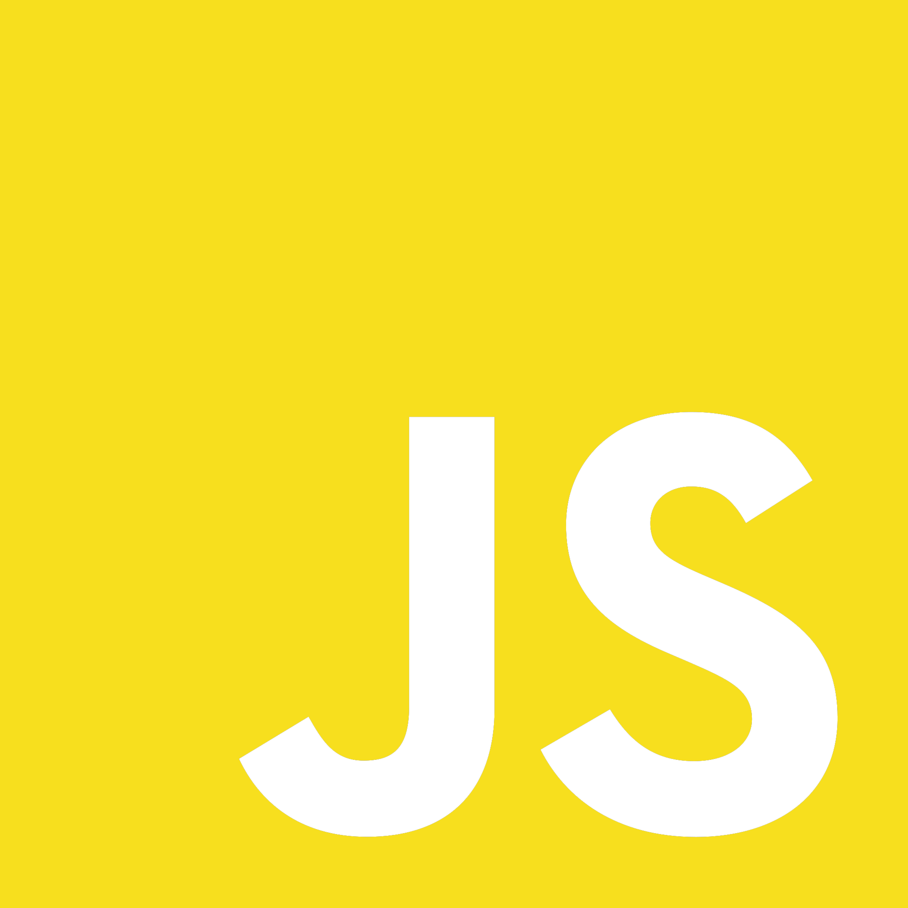
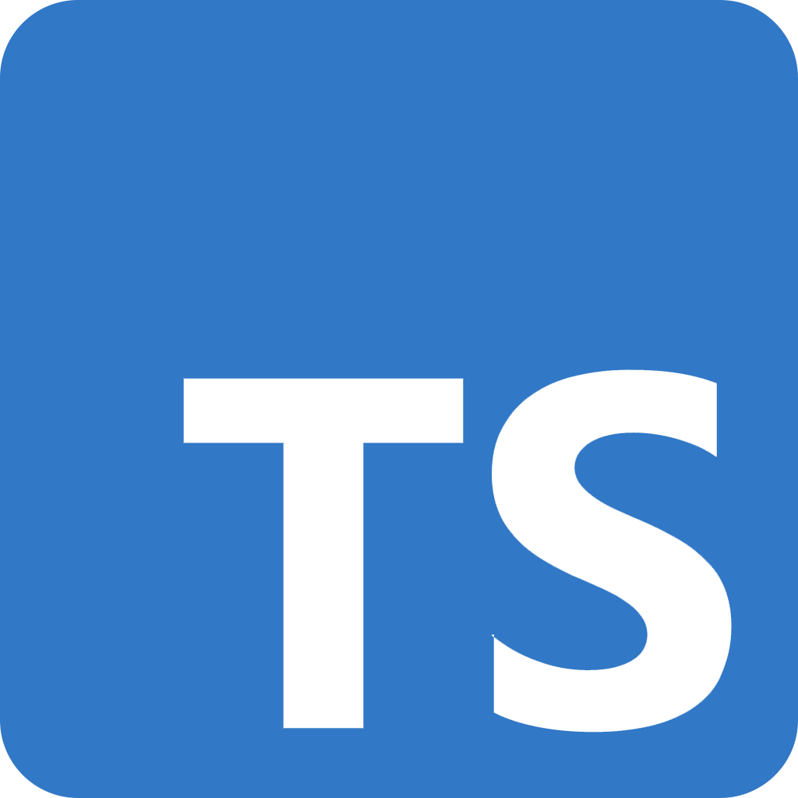
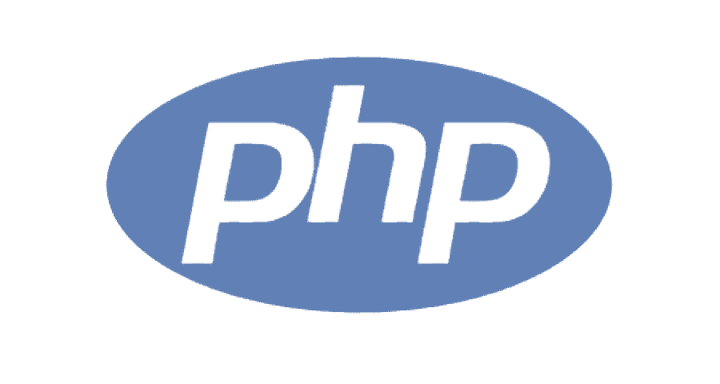
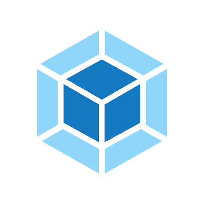
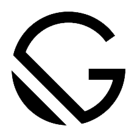
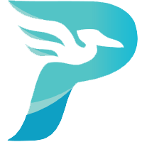

Glosario de herramientas y tecnologías para el desarrollo web
Frameworks
-
Vue.js

Vue.js es un framework de JavaScript de código abierto para la construcción de interfaces de usuario y aplicaciones de una sola página.
-
Angular 
AngularJS, es un framework de JavaScript de código abierto, mantenido por Google, que se utiliza para crear y mantener aplicaciones web de una sola página.
Librerias
-
Boostrap
Bootstrap es una librería o conjunto de herramientas de código abierto para diseño de sitios y aplicaciones web.
-
React

React es una librería de Javascript de código abierto diseñada para crear interfaces de usuario con el objetivo de facilitar el desarrollo de aplicaciones en una sola página. Es mantenido por Facebook y la comunidad de software libre.
-
Jquery
jQuery es una librería multiplataforma de JavaScript, que permite simplificar la manera de interactuar con los documentos HTML, manipular el árbol DOM, manejar eventos, desarrollar animaciones y agregar interacción con la técnica AJAX a páginas web.
-
JSP Vue
JSP es un acrónimo de Java Server Pages, su traducción literal al castellano sería Páginas de Servidor Java. Es, pues, una tecnología orientada a ayudar a los desarrolladores de software a servir páginas web generadas dinámicamente.
Con JSP podemos crear aplicaciones web que se ejecuten en varios servidores web, de múltiples plataformas, ya que Java es en esencia un lenguaje multiplataforma. Las páginas JSP están compuestas de código HTML/XML mezclado con etiquetas especiales para programar scripts de servidor en sintaxis Java.
JSP es un Servlet de java, los JSP se cargan en el lado del servidor y desde la aplicación web de java EE se operan y empaquetan como archivos con extensión .ear o .ear.
Compilador
-
Babel
Babel es una herramienta que nos permite transformar nuestro código JS de última generación (o con funcionalidades extras) a un código de Javascript que cualquier navegador o versión de Node.js pueda entender.
Framework Web
-
Django
Django es un framework de desarrollo web de código abierto, escrito en Python, que respeta el patrón de diseño conocido como modelo–vista–controlador.
Lenguajes de diseño
-
CSS
CSS, en español «Hojas de estilo en cascada», es un lenguaje de diseño gráfico para definir y crear la presentación de un documento estructurado escrito en un lenguaje de marcado.
Lenguajes de programación
-
Javascript 
JavaScript es un lenguaje de programación interpretado, dialecto del estándar ECMAScript. Se define como orientado a objetos, basado en prototipos, imperativo, débilmente tipado y dinámico.
-
Typescript 
TypeScript es un lenguaje de programación libre y de código abierto desarrollado y mantenido por Microsoft. Es un superconjunto de JavaScript, que esencialmente añade tipos estáticos y objetos basados en clases.
-
PHP
PHP es un lenguaje de programación de uso general que se adapta especialmente al desarrollo web. Fue creado inicialmente por el programador danés-canadiense Rasmus Lerdorf en 1994. En la actualidad, la implementación de referencia de PHP es producida por The PHP Group.
-
Python

Python es un lenguaje de programación interpretado cuya filosofía hace hincapié en la legibilidad de su código. Se trata de un lenguaje de programación multiparadigma, ya que soporta parcialmente la orientación a objetos, programación imperativa y, en menor medida, programación funcional.
Modulos de codigo
-
Polifyll
Un polyfill es un fragmento de código (generalmente JavaScript en la Web) que se utiliza para proporcionar una funcionalidad moderna en navegadores antiguos que no lo admiten de forma nativa.
Por ejemplo, se podría usar un polyfill para imitar la funcionalidad de un elemento HTML Canvas en Microsoft Internet Explorer 7 usando un complemento de Silverlight, o un soporte mímico para las unidades rem CSS, o text-shadow, o lo que tu quieras.
-
Servlet
Un Servlet es una clase de Java usada para extender la capacidad de aplicaciones basadas en el modelo cliente - servidor y que utilizan el protocolo HTTP basado en la interacción de ambos extremos por medio de una petición y una respuesta.
Son una potente herramienta para la generación de contenido dinámico en la web.
Herramientas Open source
-
Webpack
webpack es un paquete de módulos de JavaScript de código abierto. Está hecho principalmente para JavaScript,12345 pero puede transformar activos de front-end como HTML, CSS e imágenes si se incluyen los loaders correspondientes.6 webpack toma módulos con dependencias y genera archivos estáticos que representan esos módulos.7
Webpack toma las dependencias y genera un gráfico de dependencia que permite a los desarrolladores de la web utilizar un enfoque modular para sus propósitos de desarrollo de aplicaciones web. Se puede utilizar desde la línea de comandos, o se puede configurar utilizando un archivo de configuración que se llama webpack.config.js. archivo que se utiliza para definir reglas, plugins, etc., para un proyecto.
Generador de paginas web estaticas
-
Gatsby 
Es un generador de sitios estáticos. Así como React static, Next.js ó Jekyll with React. Incluso podríamos añadir a esta lista a Frontity, que no es, solamente un generador de sitios estáticos.
Todos estos generadores están basados en React.
Gatsby, se basa en tecnologías que son estándares web: Tales como ReactJS, Webpack, GraphQL, y ES6.
GatsbyJS, es parte del concepto JAMStack.
-
Hugo
Se trata de un generador de sitios web HTML y CSS estáticos escrito en Go.
Está optimizado para obtener velocidad, facilidad de uso y configurabilidad. Crear un sitio web es un proceso que requiere cierto tiempo y conocimientos de HTML y otros lenguajes.
-
Jekyll
Jekyll es un generador simple para sitios web estáticos con capacidades de blog.
Adecuado para sitios web personales, de proyecto o de organizaciones.
Fue escrito en lenguaje de programación Ruby por Tom Preston-Werner, el cofundador de GitHub, y se distribuye bajo la licencia de Código abierto MIT.
-
Pelican
Pelican es un generador de sitios estáticos, escrito en Python.
Acepta formatos como reStructuredText o Markdown e incluye una sencilla herramienta CLI para (re)generar el sitio web.
Fácil de interconectar con sistemas de control de versiones distribuidos y ganchos web.
-
Vuespress

VuePress es un generador de sitios estáticos desarrollado por Evan You, el creador de Vue.js, originalmente pensado para escribir la documentación de los propios proyectos de Vue.
Un sitio en VuePress es en realidad una SPA (Single-Page Application) que utiliza Vue, Vue Router y webpack como base.
Metodos/tecnicas
-
Scraping
Web scraping o raspado web, es una técnica utilizada mediante programas de software para extraer información de sitios web.
Usualmente, estos programas simulan la navegación de un humano en la World Wide Web ya sea utilizando el protocolo HTTP manualmente, o incrustando un navegador en una aplicación.
El web scraping está muy relacionado con la indexación de la web, la cual indexa la información de la web utilizando un robot y es una técnica universal adoptada por la mayoría de los motores de búsqueda. Sin embargo, el web scraping se enfoca más en la transformación de datos sin estructura en la web (como el formato HTML) en datos estructurados que pueden ser almacenados y analizados en una base de datos central, en una hoja de cálculo o en alguna otra fuente de almacenamiento.
PaaS (plataforma como servicio - platform as a service)
-
Heroku
Heroku es una plataforma como servicio (PaaS) de computación en la Nube que soporta distintos lenguajes de programación.
Heroku es propiedad de Salesforce.com.
Heroku, es una de las primeras plataformas de computación en la nube, que fue desarrollada desde junio de 2007, con el objetivo de soportar solamente el lenguaje de programación Ruby, pero posteriormente se ha extendido el soporte a Java, Node.js, Scala, Python, PHP, Go y Clojure.
La base del sistema operativo es Debian o, en la nueva plataforma, el sistema basado en Debian Ubuntu.2